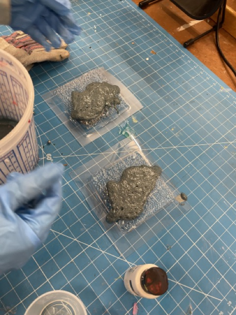
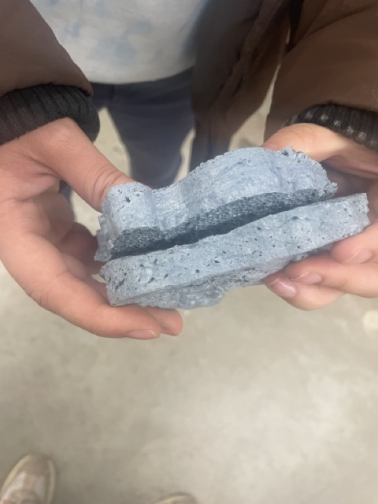
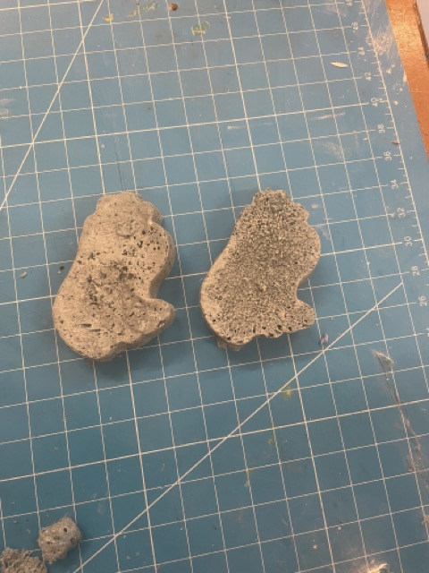

I then grabbed liquid plastic part A and part B and followed the instructions there to make a 1:1 ratio mix. I wanted to give my capybara a little bit of marbling, so I added in purple, white, and green paint. I mixed it up too much, so it ended up not marbling. Interestingly though, I think the paint might have reacted to the liquid plastic mixture, because as soon as I put in the paint to mix, the mixture started to bubble up and expand. It was an exothermic reaction based on how the heat was just radiating out of the bucket.

This happened really fast, and I was scared that the liquid plastic will cure before I even get it into my mold. I dumped it into my various capybara mold and let the molds to cure. One of them, I left to cure for 4 minutes, and the other one, I left to cure for 10 minutes as the recipe suggested. The mold that was left to cure for 10 minutes was definitely harder to remove, but it left a shape that was alot more voluptuous.

